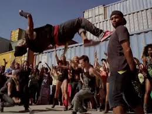

| Step Up Revolution (also known as Step Up 4: Miami Heat, and previously titled Step Up 4Ever) is an American 3D dance film and the fourth installment in the Step Up film series was released on July 27, 2012. The film was directed by Scott Speer and stars Ryan Guzman and Kathryn McCormick, the latter from the sixth season of So You Think You Can Dance.[3] The film features choreography by Jamal Sims, Christopher Scott, Chuck Maldonado[4] and Travis Wall.[5] The production design was created by Carlos A. Menendez. Unlike the first three films, produced by Touchstone Pictures and distributed by Walt Disney Studios Motion Pictures, this film was produced by Summit Entertainment and Offspring Entertainment without Disney's involvement and distributed by Lions Gate Entertainment. This is also the first Summit Entertainment film after they absorbed Summit in January 2012. |
|  |
Sean and his crew the mob from the previous film are in Los Angeles trying to make a living off of dancing but, every audition they go to they are turned down. The mob decides to leave Los Angeles and return to Miami thinking there is nothing left for them. Sean together with the help of Moose form a crew consisting of all the previous Step Up Characters to win a dance battle in Las Vegas, called the Vortex, for a chance of a 3 Year dancing contract. later in the film it also told that Andie has broken up with her past relationship with Chase and Sean with Emily, and it will also focus how Andie and Sean fall to each other's arms, even though the pressure of the winning the competition and the rivalry of Sean's former Dance Crew the MOB arise through Sean's mind.